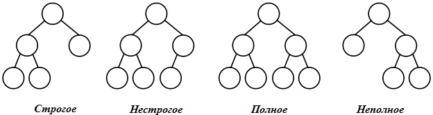
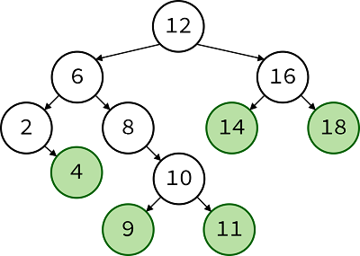

Дерево — структура данных, представляющая собой древовидную структуру в виде набора связанных узлов.
Бинарное дерево — это конечное множество элементов, которое либо пусто, либо содержит элемент (корень), связанный с двумя различными бинарными деревьями, называемыми левым и правым поддеревьями. Каждый элемент бинарного
дерева называется узлом. Связи между узлами дерева называются его ветвями.
Способ представления бинарного дерева:
Узел D, который находится непосредственно под узлом B, называется потомком B. Если D находится на уровне i, то B – на уровне i-1. Узел B называется предком D.
Максимальный уровень какого-либо элемента дерева называется его глубиной или высотой.
Если элемент не имеет потомков, он называется листом или терминальным узлом дерева.
Остальные элементы – внутренние узлы (узлы ветвления).
Число потомков внутреннего узла называется его степенью. Максимальная степень всех узлов есть степень дерева.
Каждый корень бинарного дерева является структурой, состоящей из четырех видов полей. Содержимым этих полей будут соответственно:
struct BinaryTree{
int Data; //поле данных
BinaryTree* Left; //указатель на левый потомок
BinaryTree* Right; //указатель на правый потомок
};

В общем случае у бинарного дерева на k -м уровне может быть до 2k-1 вершин. Бинарное дерево называется полным, если оно содержит только полностью заполненные уровни. В противном случае оно является неполным.
Дерево называется сбалансированным, если длины всех путей от корня к внешним вершинам равны между собой. Дерево называется почти сбалансированным, если длины всевозможных путей от корня к внешним вершинам отличаются не более, чем на единицу.
void Make_Binary_Tree(BinaryTree** Node, int n){
BinaryTree** ptr;//вспомогательный указатель
srand(time(NULL)*1000);
while (n > 0) {
ptr = Node;
while (*ptr != NULL) {
if ((double) rand()/RAND_MAX < 0.5)
ptr = &((*ptr)->Left);
else ptr = &((*ptr)->Right);
}
(*ptr) = new BinaryTree();
cout << "Введите значение ";
cin >> (*ptr)->Data;
n--;
}
}
void Print_BinaryTree(BinaryTree* Node, int l){
int i;
if (Node != NULL) {
Print_BinaryTree(Node->Right, l+1);
for (i=0; i< l; i++) cout << " ";
printf ("%4ld", Node->Data);
Print_BinaryTree(Node->Left, l+1);
}
else cout << endl;
}
void Insert_Node_BinaryTree(BinaryTree** Node,int Data) {
BinaryTree* New_Node = new BinaryTree;
New_Node->Data = Data;
New_Node->Left = NULL;
New_Node->Right = NULL;
BinaryTree** ptr = Node;//вспомогательный указатель
srand(time(NULL)*1000);
while (*ptr != NULL) {
double q = (double) rand()/RAND_MAX;
if ( q < 1/3.0) ptr = &((*ptr)->Left);
else if ( q > 2/3.0) ptr = &((*ptr)->Right);
else break;
}
if (*ptr != NULL) {
if ( (double) rand()/RAND_MAX < 0.5 )
New_Node->Left = *ptr;
else New_Node->Right = *ptr;
*ptr = New_Node;
}
else{
*ptr = New_Node;
}
}
void Delete_Node_BinaryTree(BinaryTree** Node,int Data){
if ( (*Node) != NULL ){
if ((*Node)->Data == Data){
BinaryTree* ptr = (*Node);
if ( (*Node)->Left == NULL && (*Node)->Right == NULL ) (*Node) = NULL;
else if ((*Node)->Left == NULL) (*Node) = ptr->Right;
else if ((*Node)->Right == NULL) (*Node) = ptr->Left;
else {
(*Node) = ptr->Right;
BinaryTree ** ptr1;
ptr1 = Node;
while (*ptr1 != NULL)
ptr1 = &((*ptr1)->Left);
(*ptr1) = ptr->Left;
}
delete(ptr);
Delete_Node_BinaryTree(Node,Data);
}
else {
Delete_Node_BinaryTree(&((*Node)->Left),Data);
Delete_Node_BinaryTree(&((*Node)->Right),Data);
}
}
}
Пример двоичного дерева поиска:

В процессе поиска элемента в дереве, мы сравниваем его со значением корня, если корень оказался больше — то нам нет смысла рассматривать правое поддерево (ведь там все значения еще больше). За счет этого на каждом сравнении «отсекается» узлов дерева, а значит — мы получаем поиск с оценкой сложности O(log(n)).
Операция вставки выполняет добавление листа в дерево, то справа и слева от нового узла будет пусто (null). При вставке мы выполняем поиск подходящей свободной позиции, с учетом требования «значения вершин левого поддерева должны всегда оказываться меньше или равны значению корневого узла, а правого – больше». Алгоритм вставки значения Х в дерево может выглядеть так:
Бинарное (двоичное) дерево – это дерево, в котором каждая вершина имеет не более двух потомков.
Вершина (узел) дерева – это каждый элемент дерева.
Ветви дерева – это направленные дуги, которыми соединены вершины дерева.
Высота (глубина) дерева – это количество уровней, на которых располагаются его вершины.
Дерево – это структура данных, представляющая собой совокупность элементов и отношений, образующих иерархическую структуру этих элементов.
Корень дерева – это начальный узел дерева, ему соответствует нулевой уровень.
Листья дерева – это вершины, в которые входит одна ветвь и не выходит ни одной ветви.
Неполное бинарное дерево – это дерево, уровни которого заполнены не полностью.
Нестрогое бинарное дерево – это дерево, у которого вершины имеют степень ноль (у листьев), один или два (у узлов).
Обход дерева – это упорядоченная последовательность вершин дерева, в которой каждая вершина встречается только один раз.
Поддерево – это часть древообразной структуры данных, которая может быть представлена в виде отдельного дерева.
Полное бинарное дерево – это дерево, которое содержит только полностью заполненные уровни.
Потомки – это все вершины, в которые входят ветви, исходящие из одной общей вершины.
Почти сбалансированное дерево – это дерево, у которого длины всевозможных путей от корня к внешним вершинам отличаются не более, чем на единицу.
Предок – это вершина, из которой исходят ветви к вершинам следующего уровня.
Сбалансированное дерево – это дерево, у которого длины всех путей от корня к внешним вершинам равны между собой.
Степень вершины – это количество дуг, которое выходит из этой вершины.
Степень дерева – это максимальная степень вершин, входящих в дерево.
Строгое бинарное дерево – это дерево, у которого вершины имеют степень ноль (у листьев) или два (у узлов).
Упорядоченное дерево – это дерево, у которого ветви, исходящие из каждой вершины, упорядочены по определенному критерию.
Уровень вершины – это количество дуг от корня дерева до вершины.